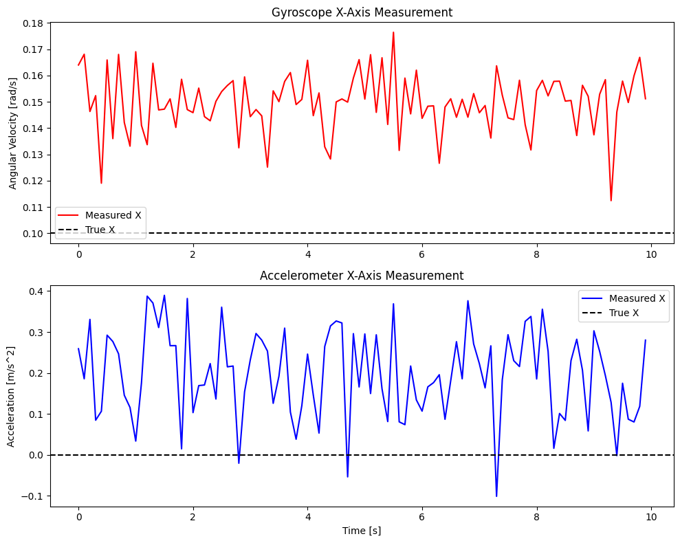

Tutorial 08: Sensor Artifacts & Biases
This tutorial demonstrates how to model sensor noise, biases, which are critical for high-fidelity GNC simulations.
1. Sensor Error Models
Most sensors suffer from deterministic and stochastic errors. The general measurement model is: $$ y_{meas} = (I + M) S \cdot y_{true} + b + w $$ Where:
$I$ is the Identity matrix.
$M$ is the Misalignment/Soft-Iron matrix.
$S$ is the Scale factor error.
$b$ is the Bias (Hard-Iron).
$w$ is Gaussian/White noise.
import numpy as np
import matplotlib.pyplot as plt
from gnc_toolkit.sensors.imu import IMU
from gnc_toolkit.sensors.magnetometer import Magnetometer
from gnc_toolkit.sensors.sun_sensor import SunSensor
print("Imports successful.")
Imports successful.
2. IMU (Accelerometer & Gyroscope)
We will simulate an IMU measuring constant angular velocity and acceleration.
# Define Sensor Parameters
gyro_params = {
"noise_std": 0.01, # rad/s
"initial_bias": np.array([0.05, -0.02, 0.01]) # constant bias
}
accel_params = {
"noise_std": 0.1, # m/s^2
"bias": np.array([0.2, 0.0, -0.1])
}
# Instantiate IMU
imu = IMU(gyro_params=gyro_params, accel_params=accel_params)
# Simulate 10 seconds of data
dt = 0.1
time = np.arange(0, 10, dt)
true_omega = np.array([0.1, 0.2, -0.05]) # rad/s
true_accel = np.array([0.0, 0.0, 9.81]) # Standard gravity
meas_omega_list = []
meas_accel_list = []
for _ in time:
w_meas, a_meas = imu.measure(true_omega, true_accel)
meas_omega_list.append(w_meas)
meas_accel_list.append(a_meas)
meas_omega_list = np.array(meas_omega_list)
meas_accel_list = np.array(meas_accel_list)
# Plotting
fig, axs = plt.subplots(2, 1, figsize=(10, 8))
axs[0].plot(time, meas_omega_list[:, 0], 'r-', label='Measured X')
axs[0].axhline(true_omega[0], color='k', linestyle='--', label='True X')
axs[0].set_title('Gyroscope X-Axis Measurement')
axs[0].set_ylabel('Angular Velocity [rad/s]')
axs[0].legend()
axs[1].plot(time, meas_accel_list[:, 0], 'b-', label='Measured X')
axs[1].axhline(true_accel[0], color='k', linestyle='--', label='True X')
axs[1].set_title('Accelerometer X-Axis Measurement')
axs[1].set_xlabel('Time [s]')
axs[1].set_ylabel('Acceleration [m/s^2]')
axs[1].legend()
plt.tight_layout()
plt.show()

3. Magnetometer Calibration
Demonstrates how soft-iron (misalignment) and hard-iron (bias) parameters impact readings.
# Misalignment Matrix (Soft-Iron)
M = np.array([
[0.0, 0.05, -0.02],
[0.05, 0.0, 0.01],
[-0.02, 0.01, 0.0]
])
bias = np.array([10.0, -5.0, 2.0]) * 1e-6 # Tesla
mag = Magnetometer(noise_std=1e-6, bias=bias, misalignment=M)
true_mag = np.array([20.0, 30.0, -10.0]) * 1e-6 # True field
measured_mag = mag.measure(true_mag)
print("--- Magnetometer ---")
print(f"True Field: {true_mag * 1e6} uT")
print(f"Measured Field: {measured_mag * 1e6} uT")
--- Magnetometer ---
True Field: [ 20. 30. -10.] uT
Measured Field: [32.62682054 25.99415861 -9.04938694] uT
4. Sun Sensor
Simulates a sun sensor measuring a unit vector pointing towards the sun.
sun_sensor = SunSensor(noise_std=0.01) # noise std in or scale
true_sun_vec = np.array([1.0, 1.0, 0.0])
true_sun_vec /= np.linalg.norm(true_sun_vec)
measured_sun_vec = sun_sensor.measure(true_sun_vec)
print("--- Sun Sensor ---")
print(f"True Sun Vector: {true_sun_vec}")
print(f"Measured Sun Vector: {measured_sun_vec}")
--- Sun Sensor ---
True Sun Vector: [0.70710678 0.70710678 0. ]
Measured Sun Vector: [ 0.71413655 0.70000494 -0.00143855]